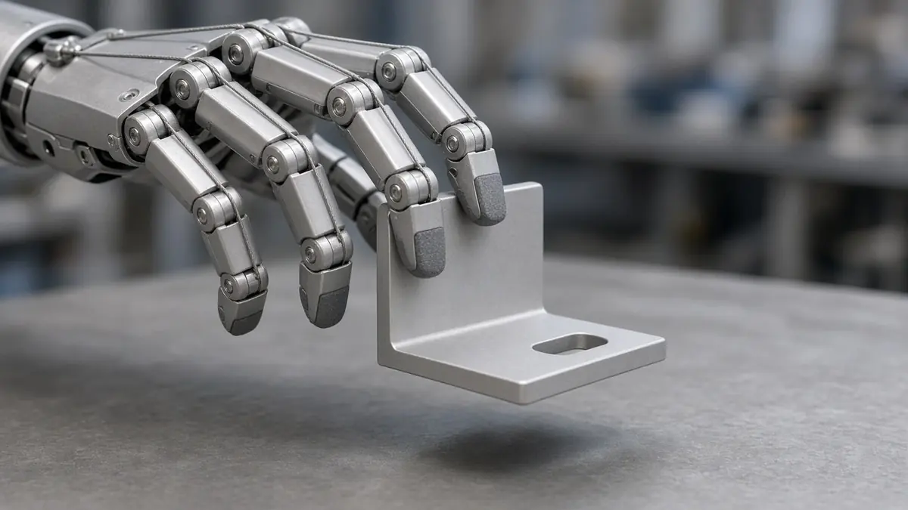
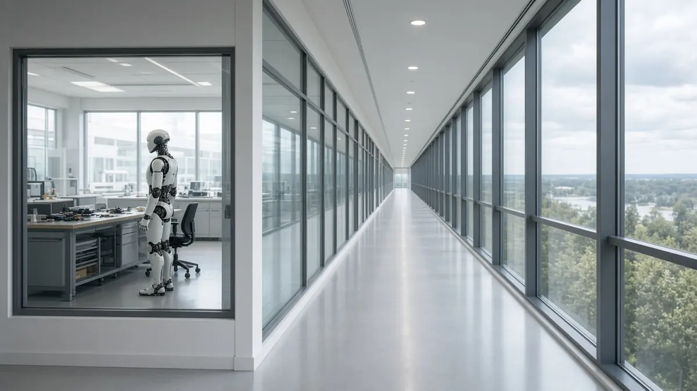

Industry
Samsung's chairman visited the RX robotics office on his fourth anniversary in the role
Short answer: Samsung Electronics chairman Lee Jae-yong visited the company's Robotics eXperience (RX) Business Promotion Office on the afternoon of 27 October 2026, Korean papers report. The date was the fourth anniversary of his becoming chairman, on 27 October 2022. The office is at Samsung's Seoul R&D campus in Umyeon-dong, Seocho-gu, and Maeil Business Newspaper, Businesskorea and SBS each say this was his first visit since the office was created in July.
SBS reported that during the visit he checked development work, including precision manipulation with a humanoid's arms and hands, and that Roh Tae-moon, president and head of the Device eXperience division, was with him. Maeil Business Newspaper reported that he reviewed humanoid technologies that could be shown at CES 2027 in Las Vegas in January. Businesskorea reported that Samsung is reviewing plans to show related technology there. None of the three papers quotes Samsung announcing a CES exhibit. The Hankyoreh had already reported that a visit was expected and that the group is developing tendon-style, five-finger hands; that account is in our earlier report.

Businesskorea and Maeil Business Newspaper describe the RX office as a unit set up in July under Roh Tae-moon to bring together robotics work that had been spread across the company, from strategy to core technology and commercialisation. Maeil Business Newspaper dates it to 21 July. Both papers say Samsung is building a robot data factory at its Gumi plant to collect learning data. Businesskorea and SBS say the company has a goal of turning its plants in Korea and abroad into AI-based autonomous factories by 2030. Those are plans as the papers describe them, not results.
Businesskorea reported that at the Samsung AI Forum last month, Chris Hauser, a lab director in the RX office, said general-purpose robots would need a task success rate of 99.99 percent before they could work in homes or factories. He told the forum, "There is still a long way to go." For the wider market these robots would be walking into, see our report on Chinese humanoid makers seeking trials in South Korea.

Sources
- Maeil Business Newspaper (MK): Chairman Lee Jae-yong marks fourth anniversary in office, first stop the robotics hub (27 Oct 2026)
- Businesskorea: Lee Jae-yong visits Samsung robotics office (27 Oct 2026)
- SBS: Lee Jae-yong marks fourth anniversary as Samsung chairman by inspecting robotics operations (27 Oct 2026)